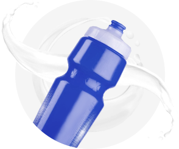

Среднестатистический человек употребляет в день 2000-2500 тысяч калорий. Спортсменам же требуется гораздо больше. Из-за высоких нагрузок, количество потребляемых микроэлементов должно быть увеличено. Поэтому в питание обычно вводятся дополнительные вещества, компенсирующие недостаток элементов.
- Главная
- › Спортивное питание
Спортивное питание

Нормопротеин протестирован Институтом питания РАМН и идеально подходит для спортивного питания. Он рекомендован для спортсменов, которые подвергаются высоким нагрузкам. Легкоусвояемый белок входит в состав этого продукта. При употреблении в нужных пропорциях, он способствует наращиванию мышечной массы. А необходимое количество витаминов позволяет в короткие сроки восстанавливаться даже после самых сложных тренировок.
Нормопротеин — это залог успешных тренировок. А кроме того, он позволяет улучшить работу организма в целом, повышает общий тонус организма, укрепляет иммунитет, повышает выносливость. При регулярном использовании позволяет увеличить количество тренировок, дает великолепные результаты.
В состав входят только натуральные компоненты. Он не имеет противопоказаний. И рекомендован к использованию лучшим тренерам страны. Фолиевая кислота, кальций, железо, комплекс витаминов делают этот продукт уникальным. Он способен заменить протеины многих других марок, и кроме этого, насыщает организм еще и питательными веществами. Но главная особенность — он не имеет противопоказаний и не существует побочных эффектов. Он полностью безопасен для человека.
Сегодня все больше спортсменов в России используют именно этот препарат для полноценного спортивного питания.